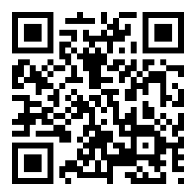

Trusted by the industry. 25 µm layer printing · 0.03% ash yield rate · Burnaby, B.C. · English, Cantonese and Mandarin

For the bench
I draw it, I print it. You cast it.
Two services: 3D design from a sketch, delivered as a printed castable pattern — or printing from your own file. Prong seats, stone seats, wall thickness and sprue placement are settled on the screen.
本人誠意提供兩項服務：由草圖做 3D 設計並打印可鑄樣板，或者來圖代印。爪位、石座、壁厚同澆口喺電腦上面已經諗妥。可用廣東話、英語、普通話溝通。


Simple and Standard: ten business days. Complex and Sculptural: by
arrangement. Two rounds of revisions and a castability check included in every price.
簡單款、標準款十個工作天；複雜款同原創雕塑另議。所有價錢已包兩輪修改及可鑄性檢查。
- Crisp detail, clean burnout. 25 µm layers, wax-filled castable
resin rated at 0.03% ash, low expansion and shrinkage.
細節清晰、燒失乾淨：25 µm 層厚，含蠟可鑄樹脂，灰分 0.03%。 - Drawn from the bench. Prong seats, wall thickness and sprues are
decided while modelling, not discovered at your bench.
出自工作檯嘅思維：爪位、壁厚、澆口喺建模時已經定好。 - Original work, any subject. Sculpture trained; every design is my own.
原創設計，題材多元：兼修雕塑，所有設計均屬原創。
Ships within three business days. I check the file for castability
before printing.
三個工作天內發貨。會先檢查可鑄性再開機。
- 1 copy
- list
- 2–4
- −15%
- 5–9
- −25%
- 10+
- −35%
- Metro Van 大溫
- free
- In B.C. 省內
- $20
- West 西部
- $22
- East 東部
- $30
Metro Vancouver delivered by hand, elsewhere by tracked post.
Damaged in transit is reprinted free; postage charged again.
大溫地區親自送達，其餘地區追蹤郵寄。（運輸過程損壞免費重印，郵資另收）